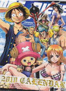

- 海贼王财富，名声，权力，曾经拥有世界上一切的“海贼王”哥尔·D·罗杰，在临死前留下了一句话，让全世界的人们，趋之若鹜奔向大海：“想要我的财宝吗？想要的话可以给你，去找吧！我把一切都放在那里了！”于是所有的人们开始起航，趋之若鹜的奔向大海，世界迎来了“大海贼时代”。
- 火影忍者这是一个忍者的世界。从小身上封印着邪恶的九尾妖狐，鸣人受尽了村人的冷落，只是拼命用各种恶作剧试图吸引大家的注意力。好在还是有依鲁卡老师关心他，鸣人的性格才没有变得扭曲，他总是干劲十足，超级乐观。为了让更多的人认可自己，鸣人的目标是成为第六代火影！鸣人的同伴，是由老师确定的同班同学，随着共同的战斗，终于成了互相认可、信赖的好伙伴。
- 驱魔少年背景为虚构的19世纪，梵蒂冈为阻止约7000年前发生的“挪亚大洪水”又称“黑暗三日”再度降临，创建“黑色教团”，结集散布各地的圣洁（INNOCENCE），而及寻找其使用的适合者－驱魔人对抗恶魔制造者千年伯爵。 恶魔是以“机械”、“灵魂”以及“悲剧”为材料所制造出来的恶性武器。千年伯爵制造出这些悲哀的恶魔准备将世界带向终点，而被神选中的圣职者以“对恶魔武器”救赎灵魂，主角－艾伦·获加与众驱魔人将挺身而战。
- 噬魂师故事讲述了死神武器职人专业学院，简称“死武专”，学院里的学生分为“工匠”和“武器”，而他们的目的是收集“99个偏离人类轨道已形成‘鬼神之卵’”和“1个魔女的灵魂”，当“武器”吞噬这100个灵魂后就能升级成为死神专用武器Death Scythe
- 死神 故事的主角黑崎一护是个看似单薄却满身热血少年，并且拥有能看见灵的体质。一天晚上，死神朽木露琪亚被他一脚踢到墙角并满脸惊疑地望着他问“你能看见我？”时序幕才这样被他正式地踢开。 从此黑崎一护身边所有的事物都翻天覆地。 自称是死神的朽木露琪亚告诉一护，自己的工作是将灵魂魂葬并引至一个叫尸魂界的地方。当时虚已近在身边，莫名重伤的父亲和昏倒在眼前的妹妹，黑崎一护自行解开死神的鬼道的夸张灵力，露琪亚惊疑的眼神。在别无选择的情况下一护得到露琪亚的力量成为死神。穿上黑色的死霸装，因他的灵力而改变形态并变得巨大的斩魄刀。巨大的面目狰狞的虚，至此而始紧紧联系在一起的两人的命运，一切都同样别无选择……
- 幽游白书 一个十四岁的不良少年，浦饭幽助为了救一名小孩而被汽车撞死了，由于灵界并没有预计到他的死亡，并没有他的容身之所，所以他得到了一个重生的机会。经过了灵界的考验，幽助终于重回自己的身体，并成为灵界侦探。在一次任务中，幽助结识了藏马和飞影，他们三个加上桑原（幽助的死党）一起替灵界解决了不少的案子。接着在“暗黑武术大会”中击败实力强劲的对手们，他们的实力和友谊与日俱增。为阻止前任灵界侦探-湘水忍，打开魔界到人间界的通道，幽助他们进入了摩界，幽助更为仙水“杀”了，但原来幽助本来是魔族的后代，因此幽助又复活了。在老爸的帮助下，幽助终于打败了仙水，众人亦回到了人间界。幽助他们和仙水的打斗惊动了魔界里的妖怪，其中势力最大的三组集团--黄泉、雷禅和躯各自向幽助，飞影和藏马发出邀请，希望他们成为自己的助手。幽助因为不满雷禅在 他和仙水打斗的时候“帮”了他，要去找他“算帐”，而飞影为了给自己多些的住战机会和经验，亦接受了躯的邀请，藏马则因多年前的一些恩怨，不得不接受黄泉的要求，他们三人都又再到了魔界，更于不到一年就成为了各国的次强。 一年后，雷禅死了，幽助称为了该国的国君，并提出了要举行一场魔界统一战，胜利者可以成为魔界的统治者，反之，落败者便要听从胜利者的命令。第一次魔界统一站的胜利者是雷禅以前的朋友--烟鬼，他订立了“不准干扰人间界”的规定，并希望每三年便再举行一次同样的比赛。赛后，幽助和藏马回到了人间界，而飞影则打算继续留在魔界
-
热门关键词：热血 机战 恐怖 搞笑 神魔 经济 推理 浪漫